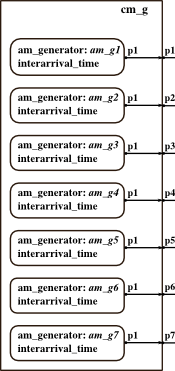

COUPLED PDEVS cm_g
stored in DEVS_PATH/01-modelbase/cm_g.m
Contents
Description
Class definition file of a coupled PDEVS model with seven atomic subcomponents of type am_g .

Generators emit workpieces/parts at deterministic times.
constructor call: obj = cm_g(name,interarrival_time1,...,interarrival_time7)
Superclass
coupled (superclass acts as associated coordinator)
Inherited Properties
inherited from coupled (to be set here):
- name : string, (unique) name of this model --> for debugging purposes max. 12 characters for "nice" debug-look ;-)
- x : cell array of strings, names of inports
- y : cell array of strings, names of outports
- components: array of objects, subcomponents
- Zid : cell array of strings, "i-to-d-matrix" (couplings)
inherited from coupled (are set automatically):
- Da : cell array of strings, names of atomic subcomponents
- Dc : cell array of strings, names of coupled subcomponents
Class Methods
Methods to Define Components and Couplings
- add_c_component(obj, comps): add one coupled subcomponent
- add_a_component(obj, comps): add one atomic subcomponent
- addcomponents(obj, comps): add one or more subcomponents of any kind ;-)
- set_x_ports(obj, ports): define input ports
- set_y_ports(obj, ports): define output ports
- set_Zid(obj, Zid): set Zid (one or more Lines)
Set Methods for Flags
- set_debug(obj,debug_flag): set debug flag to 0|1|2|3
- set_observe(obj,observe_flag): set observe flag to 0|1 (for tracking states of atomic subcomponents)
display functions:
- showall(obj) : display the object
- showxports(obj) : display x-ports and values
- showyports(obj) : display y-ports and values
- showssubcomponents(obj) : display names of all subcomponents in Da and Dc
- showycouplings(obj) : display all couplings in Zid
- showeventlist(obj) : display, when subcomponents become imminent
Ports
has no input x (is pure source)
has seven outputs y: p1...p7 to emit workpieces
Subcomponents
has seven atomic subcomponents of type am_g, named 'am_g1' ... 'am_g7'
Coupling Matrix (Zid)
structure is as follows: FROM component_name port_name TO component_name port_name (EICs and IOCs require the component name 'parent')
Zid = {'am_g1','p1','parent','p1';...
'am_g2','p1','parent','p2';...
'am_g3','p1','parent','p3';...
'am_g4','p1','parent','p4';...
'am_g5','p1','parent','p5';...
'am_g7','p1','parent','p7';...
'am_g6','p1','parent','p6'};After incarnation you can use the method Check(obj) to verify, that all component names and all port names are existent.
DEVS Tbx Home Examples Modelbase << Back